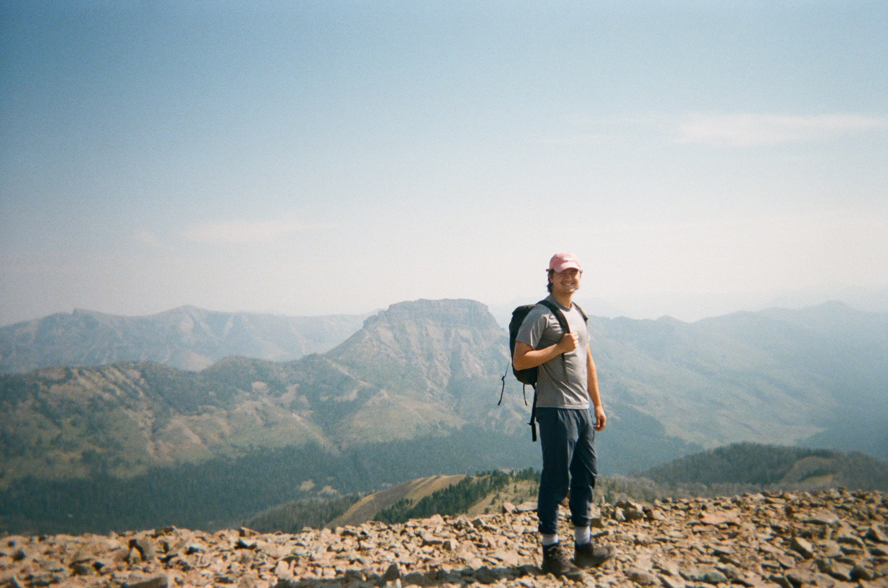

Welcome!
Welcome to my digital storytelling portfolio! I'm Jack, an Independent Consultant @ Aloft Sensing fascinated with synthetic aperture radar and natural hazards. I recently exited a PhD program early at the University of Washington where my research focused on the application of spaceborne and aerial remote sensing altimetry to measure a wide variety of earth science phenomena (cryosphere, vegetation, solid earth), though I love exploring disclipines from biodiversity conservation to astronomy as well.
Here you can find a collection of my work as it relates to my digital storytelling, including writings, maps, web-based applications, and more. If you're looking for anything in particular, feel free to reach out!
 Avalanche Peak Trail, Yellowstone
Jack Hayes
Aloft Sensing, Independent Consultant
jackeghayes(at)gmail.com
Last Updated: November 2, 2025